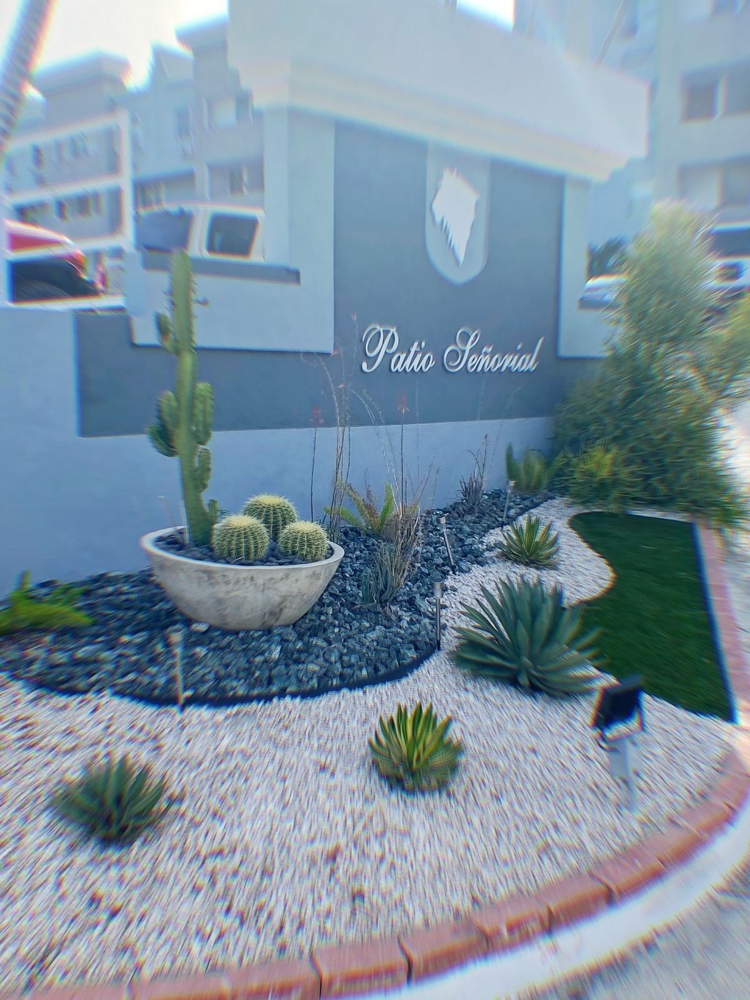
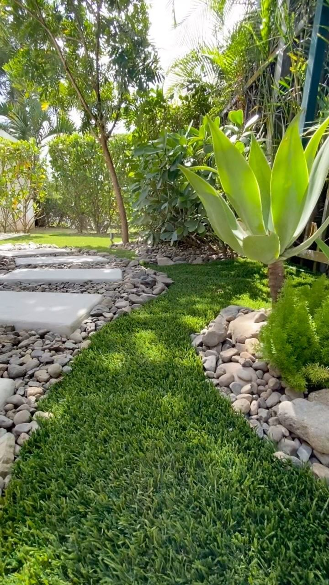
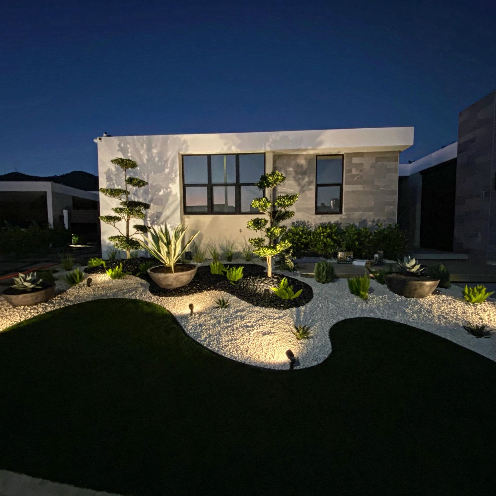
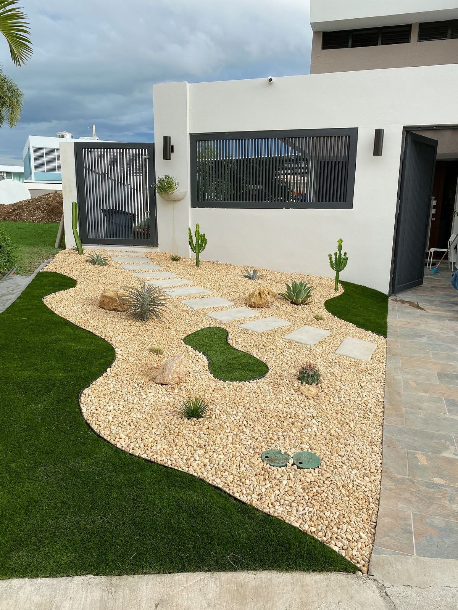
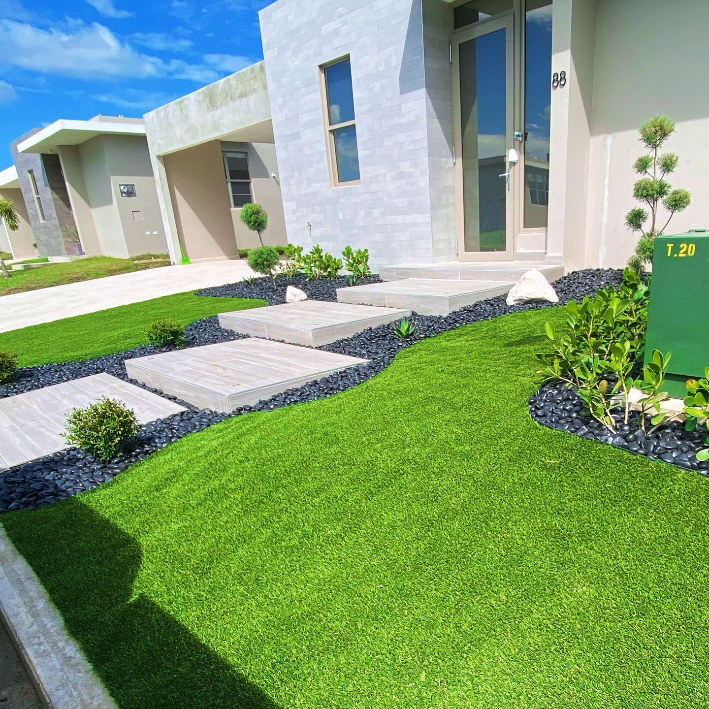
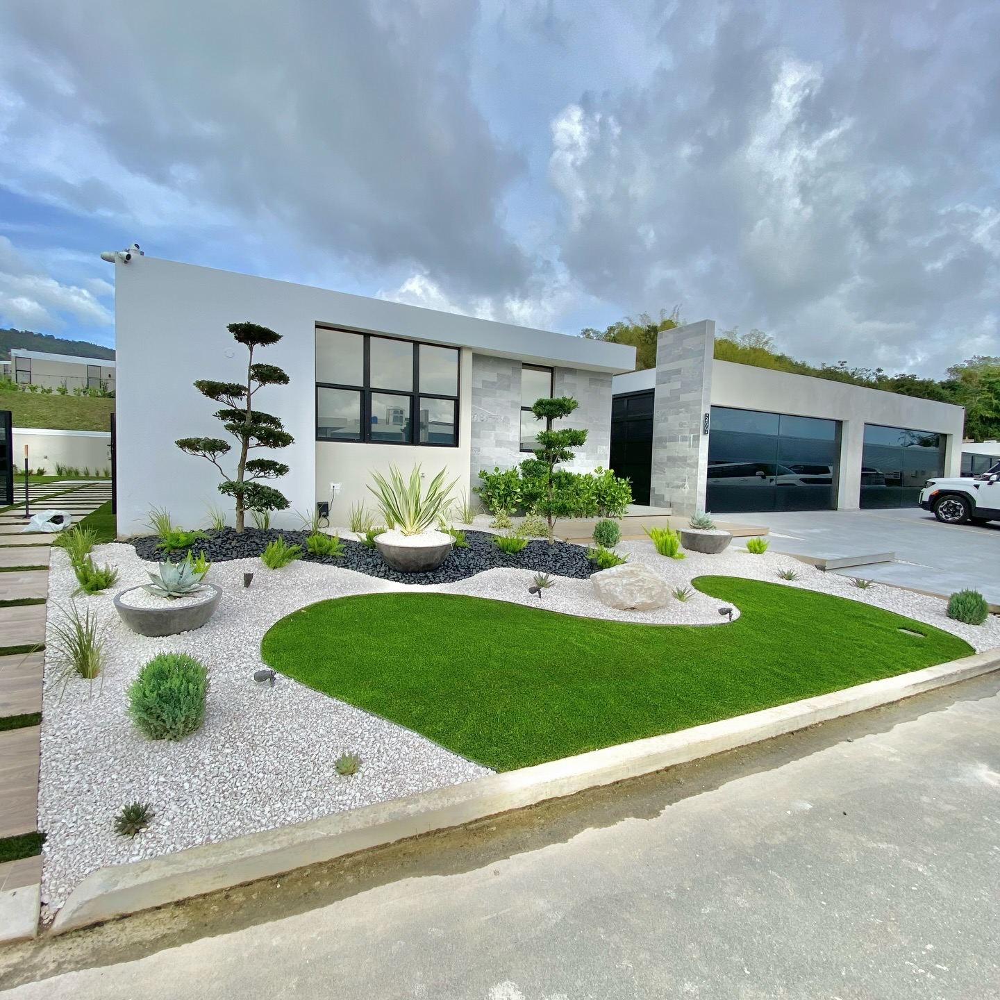
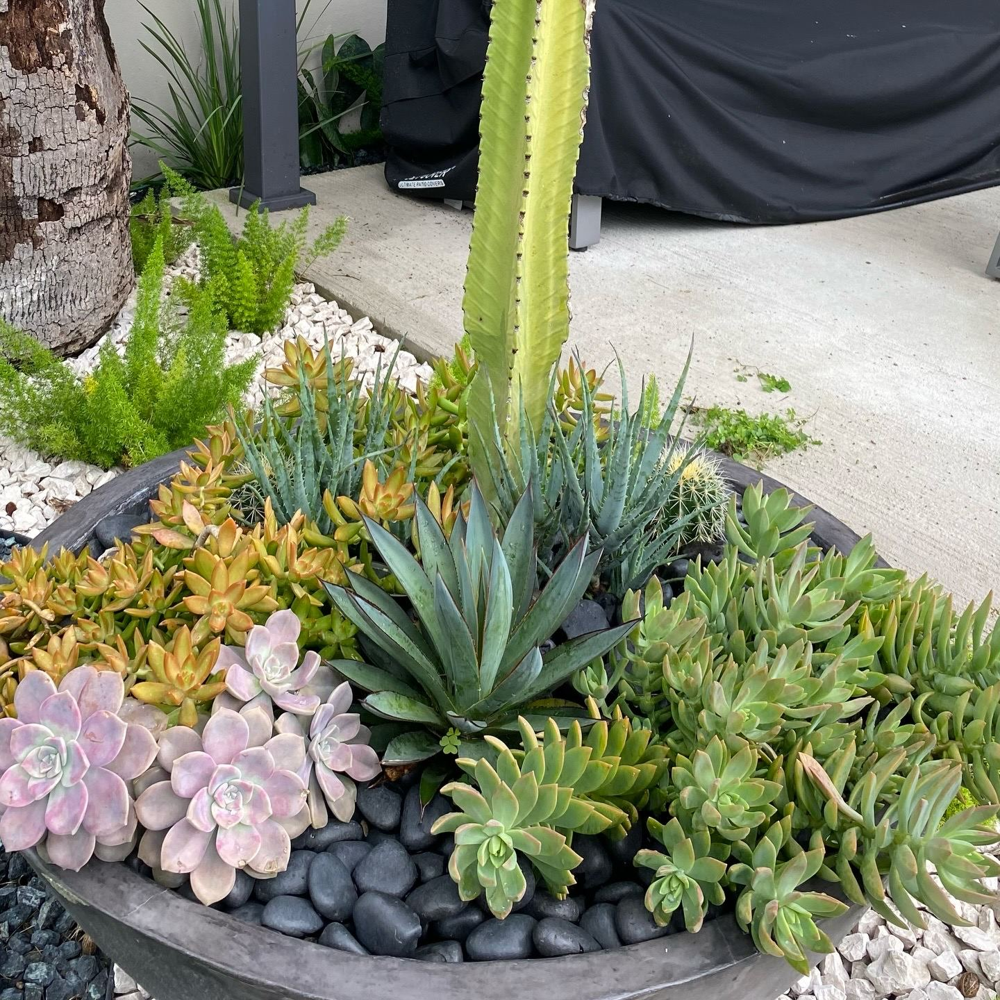
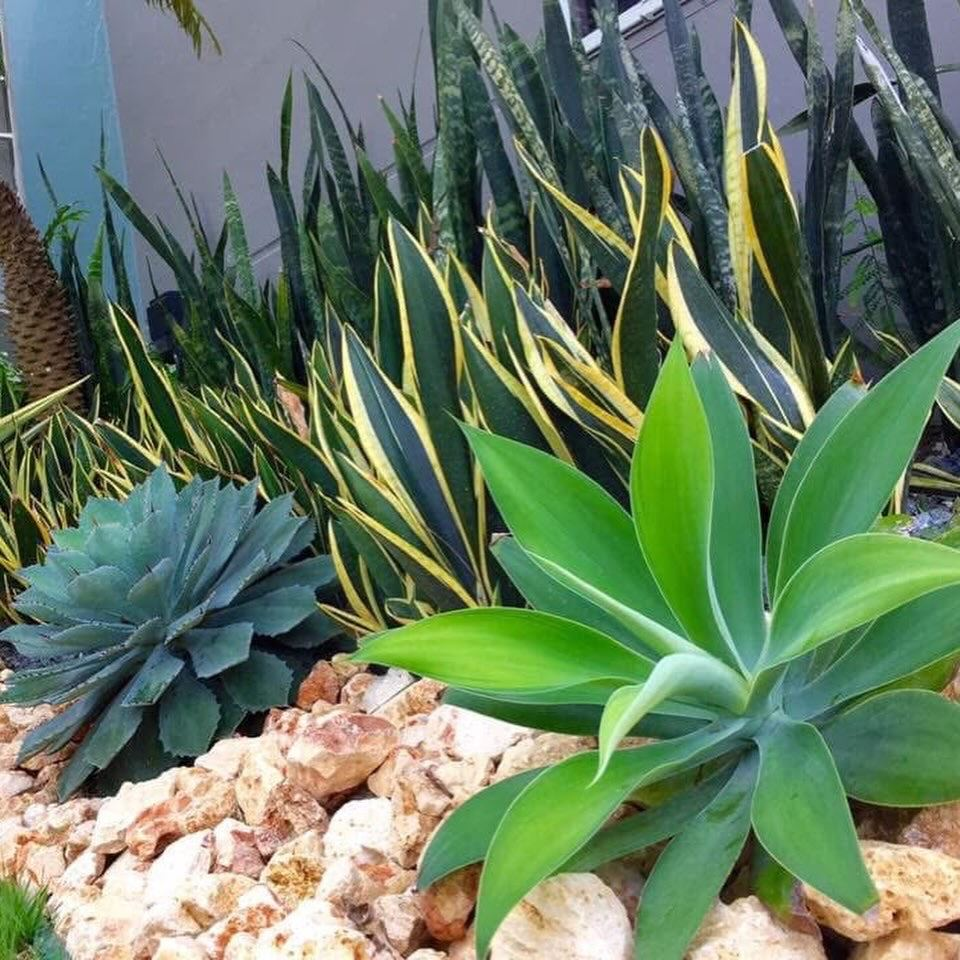

PROYECTOS
TRABAJO REAL, SIN RENDERS
Una selección de jardines que diseñamos y construimos en Puerto Rico.
Trabajo real, sin renders ni animaciones: cada foto es un jardín que existe hoy en todo Puerto Rico.
Patios residenciales, xerojardines, instalaciones comerciales y caminos de piedra, cada uno diseñado para su propio terreno. Si algo de lo que ves aquí se parece a lo que imaginas, escríbenos.









¿Te gustó algo de lo que viste? Hablemos de tu jardín.
Escríbenos por WhatsApp con fotos de tu patio y una idea de lo que buscas, el estimado es gratis.